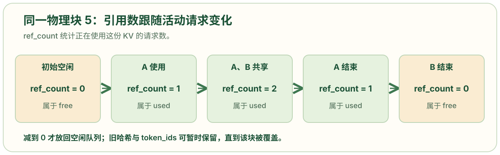
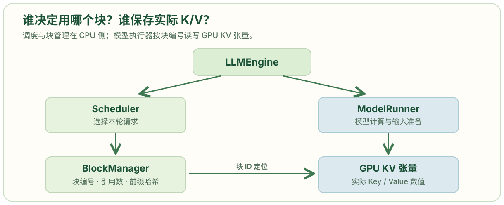
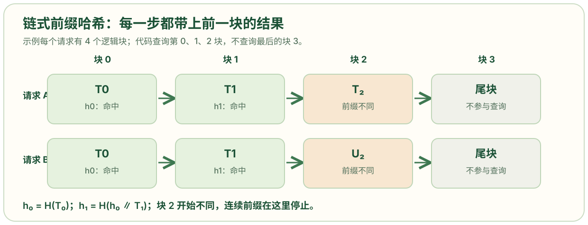
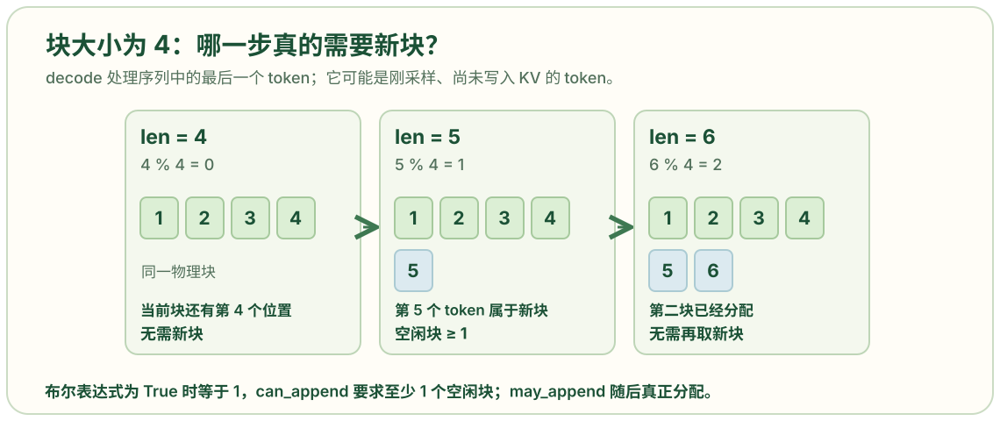

from collections import deque
import xxhash # 计算前缀块的快速内容哈希，供下一个请求查找可能复用的块。
import numpy as np
from nanovllm.engine.sequence import Sequence
class Block: # 一个物理 KV 块的 CPU 元数据对象。它不存 GPU 中实际的 K/V 数值。
def __init__(self, block_id):
self.block_id = block_id # 给每个物理块一个固定整数编号，作为块表中的引用。
self.ref_count = 0 # 初始没有活动请求引用它；多个请求共享完整前缀时可大于 1。
self.hash = -1 # -1 表示当前没有已登记的完整块哈希。
self.token_ids = [] # 暂存该已完成块对应的 token ID，用于命中时再次核对内容。
def update(self, hash: int ,token_ids: list[int]): # 完整块算完后，把哈希和 token 内容登记到该块元数据。
self.hash = hash
self.token_ids = token_ids
def reset(self):
self.ref_count = 1
self.hash = -1
self.token_ids = []
class BlockManager: # 定义块资源管理器；每个引擎的调度器持有一个实例。
def __init__(self, num_blocks: int, block_size: int):
self.block_size = block_size
self.blocks: list[Block] = [Block(i) for i in range(num_blocks)]# 为每个块编号建立一个 Block 元数据对象；数量由模型执行器对 GPU 可用显存的估算决定。
self.hash_to_block_id: dict[int, int] = dict() # 从完整前缀块哈希映射到物理块 ID，以便快速寻找复用候选。
self.free_block_ids: deque[int] = deque(range(num_blocks))
self.used_block_ids: set[int] = set()
@classmethod
def compute_hash(cls, token_ids: list[int], prefix: int = -1):
h = xxhash.xxh64() #创建的是一个"哈希计算器"对象，而不是简单的哈希值。这样设计是为了支持增量哈希计算，特别适合处理大数据。
if prefix != -1:
h.update(prefix.to_bytes(8, "little"))# 除首块外，先把前一段前缀哈希的 8 字节表示写入当前哈希状态。因此相同当前块出现在不同历史前缀之后，会得到不同的链式哈希。
h.update(np.array(token_ids).tobytes()) # 再加入当前块 token ID 的字节表示。
return h.intdigest() # 返回整数哈希，作为 hash_to_block_id 的键。
def _allocate_block(self) -> int : # 从空闲池为新内容取一个物理块。开头的下划线表示它是管理器内部方法。
block_id = self.free_block_ids.popleft() # 从空闲队列队头取块 ID；调用者应事先确认还有空闲块。
block = self.blocks[block_id] # 按 ID 找到该块元数据。
assert block.ref_count == 0 # 只有没有活动引用的块才可重新分配，否则会覆盖别人的 KV 数据。
if block.hash != -1 and self.hash_to_block_id.get(block.hash) == block_id: # 如果这个空闲块仍是某个哈希的当前登记目标，先从字典删除该映射；这是覆盖旧缓存内容时的淘汰步骤。
del self.hash_to_block_id[block.hash]
block.reset() # 清除旧内容标识，开始一份新内容，引用数置为 1。
self.used_block_ids.add(block_id) # 记录该块现在被活动请求占用。
return block_id
def _deallocate_block(self, block_id: int): # 引用数降至 0 后，将物理块放回空闲池。
assert self.blocks[block_id].ref_count == 0 # 防止仍被其他请求共享的块错误地放回空闲池。
self.used_block_ids.remove(block_id) # 从活动占用集合删除块 ID。
self.free_block_ids.append(block_id) # 放到空闲队列末尾；这里没有清除 hash 和 token_ids，因此仍可能在覆盖前复用，也就是说块被释放后，内容还在，可以继续被前缀缓存命中
def can_allocate(self, seq: Sequence) -> int: # 在真正改动块状态之前，检查这个请求有多少完整前缀块可复用、需要多少可用块。成功返回复用块数；失败返回 -1。
h = -1
num_cached_blocks = 0 # 当前找到的连续前缀命中块数。只要中间断开，就停止继续匹配。
num_new_blocks = seq.num_blocks # 先按整个请求当前长度估算要占用的块数。即使本轮只做部分 prefill，当前代码也先为整段 prompt 预留块编号。
for i in range(seq.num_blocks - 1): # 只尝试匹配最后一个逻辑块之前的完整块；最后一个块留给本次计算。长度 513、块大小 256 时，最多检查第 0、1 块。
token_ids = seq.block(i) # 取第 i 个逻辑块的 token ID。
h = self.compute_hash(token_ids, h) # 高效的增量哈希计算：将当前块合并到前缀哈希中
block_id = self.hash_to_block_id.get(h ,-1) # 在已登记的完整块字典里找物理块 ID；不存在时用 -1。即查找"是否有现成的块可以复用"
if block_id == -1 or self.blocks[block_id].token_ids != token_ids: # 即使哈希查到了块，也用保存的 token ID 再核对；当前块没命中，就不再查后续块，因为前缀复用必须连续。
break
num_cached_blocks += 1 # 确认多一个完整前缀块可复用。
if block_id in self.used_block_ids: # 已被活动请求占用的命中块可以增加引用数直接共享，不需要从空闲队列取出，因此减少后面所需空闲块数。
num_new_blocks -= 1
if len(self.free_block_ids) < num_new_blocks: # 若空闲池不足以容纳其余块，返回 -1。命中但目前空闲的块仍在空闲队列中，所以也计入需要从空闲池取出的数量。
return -1
return num_cached_blocks
def allocate(self, seq: Sequence, num_cached_blocks: int): # 正式为新请求关联命中块和分配其余块。
assert not seq.block_table # 只接受尚未建立块表的请求；已做部分 prefill 的请求沿用原块表。
h = -1
for i in range(num_cached_blocks): # 依照相同的哈希顺序找到每个命中块对应的 block_id 和 Block 对象。
token_ids = seq.block(i)
h = self.compute_hash(token_ids, h)
block_id = self.hash_to_block_id[h]
block = self.blocks[block_id]
if block_id in self.used_block_ids: # 若块正被其他活动请求使用，将引用数加 1，允许两个请求共享同一份完整前缀 KV。
block.ref_count += 1
else: # 若命中块原本是空闲的，把引用数设为 1，从空闲队列取出，并加入活动占用集合。它的已计算 KV 内容继续保留。
block.ref_count = 1
self.free_block_ids.remove(block_id)
self.used_block_ids.add(block_id)
seq.block_table.append(block_id) # 按逻辑顺序把命中块的物理编号加入请求块表。
for i in range(num_cached_blocks, seq.num_blocks): # 对没有命中的逻辑块逐个调用 _allocate_block()，分配全新的物理块编号。
seq.block_table.append(self._allocate_block())
seq.num_cached_tokens = num_cached_blocks * self.block_size # 命中 n 个完整块，则前 n × block_size 个 token 已有可用 KV，不必再 prefill。
def deallocate(self, seq: Sequence):# 当请求完成或被抢占时，解除它对每个物理块的引用。
for block_id in reversed(seq.block_table): # 从块表末尾向前处理；这个顺序也使请求尾部通常先回到空闲池。
block = self.blocks[block_id]
block.ref_count -= 1
if block.ref_count == 0:
self._deallocate_block(block_id) # 只有无人使用的块才调用 _deallocate_block()，重新进入空闲队列。
seq.num_cached_tokens = 0 # 清除该请求的已算 token 进度；抢占后再调度要重新检查哪些完整前缀还能命中。
seq.block_table.clear() # 清空请求对物理块的映射。GPU KV 大张量本身仍由执行器持有，不在这里销毁。
def can_append(self, seq: Sequence) -> bool: #判断下一轮 decode 是否有足够块空间。
return len(self.free_block_ids) >= (len(seq) % self.block_size == 1)
def may_append(self, seq: Sequence): # 条件同上；跨块边界时正式分配一个新块并追加到 seq.block_table。调用前应已通过 can_append() 检查。
if len(seq) % self.block_size == 1:
seq.block_table.append(self._allocate_block())
def hash_blocks(self, seq: Sequence): # 将本轮计算后成为完整块的内容登记为可复用前缀。它在 postprocess() 更新 num_cached_tokens 之前调用。
start = seq.num_cached_tokens // self.block_size
end = (seq.num_cached_tokens + seq.num_scheduled_tokens) // self.block_size
if start == end: return
h = self.blocks[seq.block_table[start - 1]].hash if start > 0 else -1 # 若前面已有完整块，从上一块保存的链式哈希继续；否则从 -1 开始。
for i in range(start, end):
block = self.blocks[seq.block_table[i]]
token_ids = seq.block(i)
h = self.compute_hash(token_ids, h) # 计算到当前块为止的前缀哈希。
block.update(h, token_ids)# 在块元数据中保存当前完整内容的哈希与 token ID。
self.hash_to_block_id[h] = block.block_id# 让以后的请求可以根据前缀哈希找到该物理块。一个物理块的 `ref_count` 为 0、1、2 时，分别表示什么
class Block:
def __init__(self, block_id):
self.block_id = block_id
self.ref_count = 0
self.hash = -1
self.token_ids = []要解决的问题是：A 和 B 共享同一个前缀块时，A 结束会不会把 B 正在使用的块释放？ ref_count 记录当前有多少个请求持有这个物理块。刚创建时是 0；A 使用时是 1；B 也复用它时是 2；若还有第三个请求共享，就是 3。此时 A 结束只会把引用数从 2 减到 1，B 仍可以读取这份 KV 数据。
if block_id in self.used_block_ids:
block.ref_count += 1
else:
block.ref_count = 1
self.free_block_ids.remove(block_id)
self.used_block_ids.add(block_id)allocate() 中，命中的块若已经被活动请求占用，就增加 ref_count；若命中的是空闲但内容尚未被覆盖的块，就从空闲队列移出，并把引用数设为 1。释放请求时，deallocate() 对它块表中的每个块减 1；只有减到 0 才放回空闲队列。allocate() 与 deallocate() 源码
for block_id in reversed(seq.block_table):
block = self.blocks[block_id]
block.ref_count -= 1
if block.ref_count == 0:
self._deallocate_block(block_id)
图中的块 5 是解释性示例。ref_count = 0 表示当前没有请求持有，并不表示该块的旧内容立刻消失：_deallocate_block() 只把编号放回空闲队列，没有清空 hash 和 token_ids。旧内容尚未被新分配覆盖时，前缀缓存仍可能命中它；真正拿它写新内容时，_allocate_block() 才移除旧哈希映射并调用 reset()。
引擎、调度器和块管理器分别负责什么
class BlockManager:
def __init__(self, num_blocks: int, block_size: int):
self.block_size = block_size
self.blocks: list[Block] = [Block(i) for i in range(num_blocks)]
self.hash_to_block_id: dict[int, int] = dict()
self.free_block_ids: deque[int] = deque(range(num_blocks))
self.used_block_ids: set[int] = set()这里要定位的是：这份文件管理的究竟是 GPU 上的 KV 数据，还是决定如何使用这些数据的记录？ BlockManager 保存的是 CPU 侧的块元数据：每个编号对应的 Block、空闲与使用中的编号，以及从前缀哈希查块编号的字典。Block 的 token_ids 用来核对缓存内容；实际的 Key/Value 张量由模型执行器持有。ModelRunner 源码

请求由 LLMEngine.add_request() 加入调度器，generate() 驱动后续轮次。Scheduler.schedule() 决定本轮选哪些请求，并调用 BlockManager 检查、分配或追加块；请求被抢占时由 Scheduler.preempt() 解除块引用，正常结束时由 Scheduler.postprocess() 解除引用。LLMEngine 同时持有 ModelRunner，后者按请求的块表把本轮 token 的 KV 写入 GPU 张量。图中的两条分支说明了职责边界：块管理器维护编号和占用关系，执行器计算并保存实际 K/V 数值。LLMEngine、Scheduler
`_allocate_block` 的下划线与 `__init__` 的双下划线有何区别
class BlockManager:
def __init__(self, num_blocks: int, block_size: int):
self.block_size = block_sizedef _allocate_block(self) -> int:
block_id = self.free_block_ids.popleft()
block = self.blocks[block_id]
assert block.ref_count == 0问题落在方法名上：_allocate_block() 前面只有一个下划线，Python 会禁止外部调用吗？ 不会。单个前导下划线是“供类内部使用”的命名约定。这个方法只从空闲队列取出一个物理块、核对引用数并准备覆盖旧内容；对外的 allocate(seq, num_cached_blocks) 会先处理前缀共享，再在未命中的位置调用 _allocate_block()。调用方应使用完成整套步骤的公开方法，而不是绕过它直接分配一个块。
笔记里还比较了另外两种名字，含义不同：
| 写法 | 在此处的例子 | Python 如何处理 |
|---|---|---|
_name |
_allocate_block |
约定为内部接口，名称本身仍可访问。 |
__name |
假设写成 __secret |
类内名称会改写为 _BlockManager__secret；本文件没有这种成员。 |
__name__ |
__init__ |
Python 识别的特殊方法；构造对象时自动调用。 |
查询前缀缓存时，为什么要把上一块的哈希接进来
@classmethod
def compute_hash(cls, token_ids: list[int], prefix: int = -1):
h = xxhash.xxh64()
if prefix != -1:
h.update(prefix.to_bytes(8, "little"))
h.update(np.array(token_ids).tobytes())
return h.intdigest()for i in range(seq.num_blocks - 1):
token_ids = seq.block(i)
h = self.compute_hash(token_ids, h)
block_id = self.hash_to_block_id.get(h, -1)要匹配的是从请求开头到当前块为止的完整前缀，而不只是当前块本身。 设逻辑块 0、1 的 token 分别是 T₀、T₁。首块得到 h₀ = H(T₀)；下一块把 h₀ 的 8 字节表示与 T₁ 的字节依次送进哈希计算器，得到 h₁ = H(h₀ ∥ T₁)。分别计算两个块的哈希再相加，不能表示这样一段有顺序的前缀。相同的 T₁ 接在不同的首块后面通常得到不同的前缀哈希；若发生哈希碰撞，后文的 token 核对会阻止错误复用。代码每次创建一个哈希计算器，通过传入上一个结果形成这条链。compute_hash() 与 can_allocate() 源码

图中的 A、B 前两块 token 相同，因此查询 B 时先命中块 0，再以相同的 h₀ 计算并命中块 1。hash_blocks() 在模型算完完整块后，把链式哈希登记到 hash_to_block_id；can_allocate() 从请求开头逐块查这个字典，遇到首个不匹配就停止。循环只检查 range(seq.num_blocks - 1)，即当前最后一个逻辑块不作为可复用前缀候选。
哈希已经命中，为什么还要比较 `token_ids`
block_id = self.hash_to_block_id.get(h, -1)
if block_id == -1 or self.blocks[block_id].token_ids != token_ids:
break疑问是：字典已经找到了块编号，为什么还可能判定失败？ 哈希把大量不同的 token 序列压缩为有限大小的整数，理论上不同内容可能得到同一个值。查到的 block_id 只是候选；代码再比较该物理块保存的当前块 token_ids 与请求的当前块是否逐项相同。若不同，就不复用，并停止检查后面的块。前面的完整块已经在前几次循环中逐一核对，所以这里只需要检查当前块。
例如，设块大小为 2，假设块 0 的哈希恰好把内容 [1, 2] 与 [9, 9] 映射成相同的整数。查询请求 [9, 9] 时字典可能返回存着 [1, 2] 的块；第二个条件会挡住这次错误复用。这个数字例子只说明判断顺序，不表示真实运行中观测到哈希碰撞。
`can_append()` 为什么只在余数为 1 时要求空闲块
def can_append(self, seq: Sequence) -> bool:
return len(self.free_block_ids) >= (len(seq) % self.block_size == 1)
def may_append(self, seq: Sequence):
if len(seq) % self.block_size == 1:
seq.block_table.append(self._allocate_block())问题在于：块大小为 4 时，序列长度恰好为 4 看起来已经填满，为什么此时不检查新块；长度变成 5 才检查？ Sequence 的 token 列表包含刚采样出来、尚未为其计算 KV 的最后一个 token。decode 本轮要处理这个最后的 token。长度为 4 时，它仍占第一个逻辑块的末尾位置；本轮处理后又采样出第 5 个 token，序列长度变为 5。下一轮处理第 5 个 token 时，它才需要第二个物理块。Sequence.append_token()

括号里的比较式产生布尔值：余数是 1 时为 True，在整数比较中相当于 1，所以 can_append() 要求空闲块数至少为 1；其他余数得到 False，相当于 0，条件总能通过。真正取出新块的是紧接着的 may_append()。图中长度 4、5、6 与代码的余数 0、1、2 一一对应。